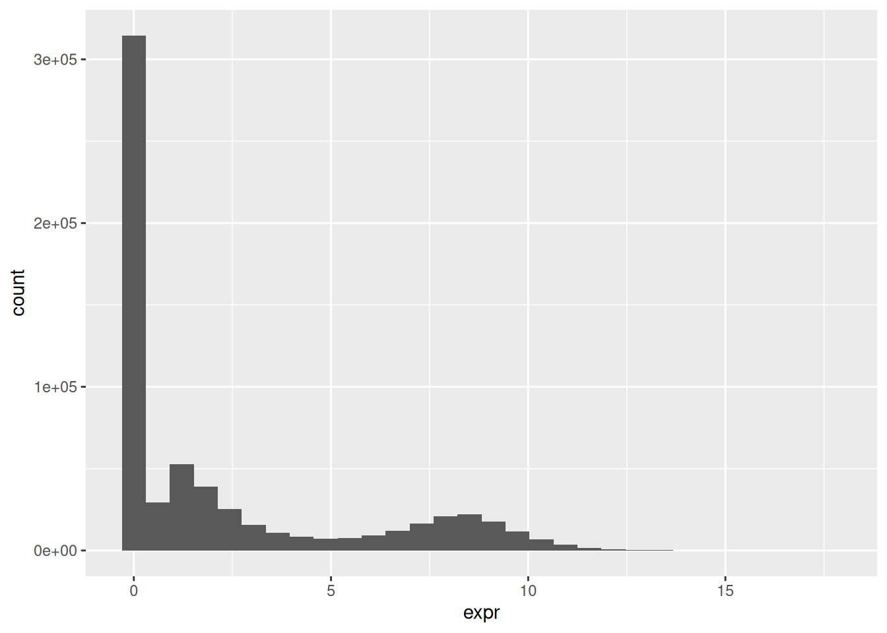

Workshop
Transcriptomics 1: Hello data!
Introduction
Session overview
In this workshop you will learn what steps to take to get a good understanding of your transcriptomics data before you consider any statistical analysis. This is an often overlooked, but very valuable and informative, part of any data pipeline. It gives you the deep understanding of the data structures and values that you will need to code and trouble-shoot code, allows you to spot failed or problematic samples and informs your decisions on quality control.
In this session, you should examine all four data sets because the comparisons will give you a much stronger understanding of your own project data. Compare and contrast is a very useful way to build understanding.
Set up a Project
üé¨ Start RStudio from the Start menu
üé¨ Make an RStudio project. Be deliberate about where you create it so that it is a good place for you
üé¨ Use the Files pane to make new folders for the data. I suggest data-raw and data-processed
üé¨ Make a new script called workshop-1.R to carry out the rest of the work.
üé¨ Record what you do and what you find out. All of it!
üé¨ Load tidyverse (Wickham et al. 2019) for importing, summarising, plotting and filtering.
Examine data using a spreadsheet
These are the four datasets. Each set compromises several files.
üê∏ Frog development:
üéÑ Arabidopsis:
üíâ Leishmania:
üê≠ Stem cells:
üé¨ Save the files to data-raw and open them in Excel
üé¨ Answer the following questions:
- Describe how the sets of data are similar and how they are different.
- What is in the rows and columns of each file?
- How many rows and columns are there in each file? Are these the same? In all cases or some cases? Why?
- Google gene id. Where does your search take you? How much information is available?
üé¨ Did you record all that??
Explore data in R
The first task is to get an overview. We want to know
- how may zeros are there and how are they distributed?
- what is the distribution of non-zero values?
- does it look as though all the samples/cells were equally “successful”? Can we spot any problems?
- can we determine a quality threshold for filtering out genes with very low counts?
Genes which are zero in every cell/sample, i.e., genes that are not expressed at all give us no information. We will want to to filter those out. We will also want to filter out genes with very low counts for quality control. These are mostly likely false positives. If our data collection has gone well we would hope to see approximately the same average expression in each sample/cell of the same type. That is, replicates should be similar. In contrast, we would expect to see that the average expression of genes varies.
We get this overview by looking at:
The distribution of values across all the data in the file
The distribution of values across the samples/cells (i.e., averaged across genes). This allows us to see variation between samples/cells:
The distribution of values across the genes (i.e., averaged across samples/cells). This allows us to see variation between genes.
The next sections will guide you through each of these for each of the data sets. Start with your own data set then move on to at least one of the others.
üê∏ Frog development
Import
Import the data for stage 30.
üé¨ Import xlaevis_counts_S30.csv
# üê∏ import the s30 data
s30 <- read_csv("data-raw/xlaevis_counts_S30.csv")üé¨ Check the dataframe has the number of rows and columns you were expecting and that column types and names are as expected.
Distribution of values across all the data in the file
The values are spread over multiple columns so in order to plot the distribution as a whole, we will need to first use pivot_longer() to put the data in ‘tidy’ format (Wickham 2014) by stacking the columns. We could save a copy of the stacked data and then plot it, but here, I have just piped the stacked data straight into ggplot(). This helps me avoid cluttering my R environment with temporary objects.
üé¨ Pivot the counts (stack the columns) so all the counts are in a single column (count) labelled in sample by the column it came from and pipe into ggplot() to create a histogram:
s30 |>
pivot_longer(cols = -xenbase_gene_id,
names_to = "sample",
values_to = "count") |>
ggplot(aes(x = count)) +
geom_histogram()
This data is very skewed - there are very many low counts and a very few higher numbers. It is hard to see the very low bars for the higher values. Logging the counts is a way to make the distribution more visible. You cannot take the log of 0 so we add 1 to the count before logging. The log of 1 is zero so we will be able to see how many zeros we had.
üé¨ Repeat the plot of log of the counts.
s30 |>
pivot_longer(cols = -xenbase_gene_id,
names_to = "sample",
values_to = "count") |>
ggplot(aes(x = log10(count + 1))) +
geom_histogram()
I’ve used base 10 only because it easy to convert to the original scale (1 is 10, 2 is 100, 3 is 1000 etc). Notice we have a peak at zero indicating there are many zeros. We would expect the distribution of counts to be roughly log normal because this is expression of all the genes in the genome1. The number of low counts is inflated (small peak near the low end). This suggests that these lower counts might be false positives. The removal of low counts is a common processing step in ’omic data. We will revisit this after we have considered the distribution of counts across samples and genes.
Distribution of values across the samples
Summary statistics including the the number of NAs can be seen using the summary(). It is most helpful which you have up to about 25 columns. There is nothing special about the number 25, it is just that summaries of a larger number of columns are difficult to grasp.
üé¨ Get a quick overview of the 7 columns:
# examine all the columns quickly
# works well with smaller numbers of column
summary(s30) xenbase_gene_id S30_C_1 S30_C_2 S30_C_3
Length:11893 Min. : 0.0 Min. : 0.0 Min. : 0.0
Class :character 1st Qu.: 14.0 1st Qu.: 14.0 1st Qu.: 23.0
Mode :character Median : 70.0 Median : 75.0 Median : 107.0
Mean : 317.1 Mean : 335.8 Mean : 426.3
3rd Qu.: 205.0 3rd Qu.: 220.0 3rd Qu.: 301.0
Max. :101746.0 Max. :118708.0 Max. :117945.0
S30_F_1 S30_F_2 S30_F_3
Min. : 0.0 Min. : 0.0 Min. : 0.0
1st Qu.: 19.0 1st Qu.: 17.0 1st Qu.: 16.0
Median : 88.0 Median : 84.0 Median : 69.0
Mean : 376.2 Mean : 376.5 Mean : 260.4
3rd Qu.: 251.0 3rd Qu.: 246.0 3rd Qu.: 187.0
Max. :117573.0 Max. :130672.0 Max. :61531.0 Notice that:
- the minimum count is 0 and the maximums are very high in all the columns
- the medians are quite a lot lower than the means so the data are skewed (hump to the left, tail to the right) and there must be quite a lot of zeros
-
S30_F_3does have a somewhat lower maximum count
We want to know how many zeros there are in each a column. To achieve this, we can make use of the fact that TRUE evaluates to 1 and FALSE evaluates to 0. Consequently, summing a column of TRUE/FALSE values will give you the number of TRUE values. For example, sum(S30_C_1 > 0) gives the number of values above zero in the S30_C_1 column. If you wanted the number of zeros, you could use sum(S30_C_1 == 0).
üé¨ Find the number values above zero in all six columns:
s30 |>
summarise(sum(S30_C_1 > 0),
sum(S30_C_2 > 0),
sum(S30_C_3 > 0),
sum(S30_F_1 > 0),
sum(S30_F_2 > 0),
sum(S30_F_3 > 0))# A tibble: 1 × 6
`sum(S30_C_1 > 0)` `sum(S30_C_2 > 0)` `sum(S30_C_3 > 0)` `sum(S30_F_1 > 0)`
<int> <int> <int> <int>
1 10553 10532 10895 10683
# ℹ 2 more variables: `sum(S30_F_2 > 0)` <int>, `sum(S30_F_3 > 0)` <int>There is a better way of doing this that saves you having to repeat so much code - very useful if you have a lot more than 6 columns! We can use pivot_longer() to put the data in tidy format and then use the group_by() and summarise() approach we have used extensively before.
üé¨ Find the number of zeros in all columns:
s30 |>
pivot_longer(cols = -xenbase_gene_id,
names_to = "sample",
values_to = "count") |>
group_by(sample) |>
summarise(n_above_zero = sum(count > 0))# A tibble: 6 × 2
sample n_above_zero
<chr> <int>
1 S30_C_1 10553
2 S30_C_2 10532
3 S30_C_3 10895
4 S30_F_1 10683
5 S30_F_2 10694
6 S30_F_3 10930You could expand this code to get get other useful summary information
üé¨ Summarise all the samples:
s30 |>
pivot_longer(cols = -xenbase_gene_id,
names_to = "sample",
values_to = "count") |>
group_by(sample) |>
summarise(min = min(count),
lowerq = quantile(count, 0.25),
mean = mean(count),
median = median(count),
upperq = quantile(count, 0.75),
max = max(count),
n_above_zero = sum(count > 0))# A tibble: 6 × 8
sample min lowerq mean median upperq max n_above_zero
<chr> <dbl> <dbl> <dbl> <dbl> <dbl> <dbl> <int>
1 S30_C_1 0 14 317. 70 205 101746 10553
2 S30_C_2 0 14 336. 75 220 118708 10532
3 S30_C_3 0 23 426. 107 301 117945 10895
4 S30_F_1 0 19 376. 88 251 117573 10683
5 S30_F_2 0 17 376. 84 246 130672 10694
6 S30_F_3 0 16 260. 69 187 61531 10930The mean count ranges from 260 to 426. S30_F_3 does stand out a little but not by too much. If we had more replicates we might consider conducting our analysis both with and without this replicate to determine whether its oddness was influencing our conclusions. Since we have just 3 replicates, we will leave it in. The potential effect of an odd replicate is reduced statistical power. Major differences in gene expression will still be uncovered. Differences between genes with lower average expression and or more variable expression might be missed. Whether this matters depends on the biological question you are asking. In this case, it does not matter because the major differences in gene expression will be enough.
üé¨ Save the summary as a dataframe, s30_summary_samp (using assignment).
We can also plot the distribution of counts across samples. We have many
values (11893) so we are not limited to using geom_histogram(). geom_density() gives us a smooth distribution.
üé¨ Plot the log10 of the counts + 1 again but this time facet by the sample:
s30 |>
pivot_longer(cols = -xenbase_gene_id,
names_to = "sample",
values_to = "count") |>
ggplot(aes(log10(count + 1))) +
geom_density() +
facet_wrap(. ~ sample, nrow = 3)
The key information to take from these plots is:
- the distributions are roughly similar though
S30_F_3does stand out a little - the peak at zero suggests quite a few counts of 1.
- we would expect the distribution of counts in each sample to be roughly log normal so that the small rise near the low end, even before the peak at zero, suggests that these lower counts might be anomalies.
We have found the distribution across samples to be similar to that over all. This is good because it means that the samples are fairly consistent with each other. We can now move on to the next step.
Distribution of values across the genes
There are lots of genes in this dataset therefore we will take a slightly different approach. We would not want to use plot a distribution for each gene in the same way. Will pivot the data to tidy and then summarise the counts for each gene.
üé¨ Summarise the counts for each gene and save the result as s30_summary_gene. Include the same columns as we had in the by sample summary (s30_summary_samp) and an additional column, total for the total number of counts for each gene.
üé¨ View the s30_summary_gene dataframe.
Notice that we have:
- a lot of genes with counts of zero in every sample
- a lot of genes with zero counts in several of the samples
- some very very low counts.
Genes with very low counts should be filtered out because they are unreliable - or, at the least, uninformative. The goal of our downstream analysis will be to see if there is a significant difference in gene expression between the control and FGF-treated sibling. Since we have only three replicates in each group, having one or two unreliable, missing or zero values, makes such a determination impossible for a particular gene. We will use the total counts (total) and the number of samples with non-zero values (n_above_zero) in this dataframe to filter our genes later.
As we have a lot of genes, it is helpful to plot the mean counts with geom_pointrange() to get an overview of the distributions. We will again plot the log of the mean counts. We will also order the genes from lowest to highest mean count.
üé¨ Plot the logged mean counts for each gene in order of size using geom_pointrange():
s30_summary_gene |>
ggplot(aes(x = reorder(xenbase_gene_id, mean), y = log10(mean))) +
geom_pointrange(aes(ymin = log10(mean - sd),
ymax = log10(mean + sd )),
size = 0.1)
(Note the warning is expected since we have zero means).
You can see we also have quite a few genes with means less than 1 (log below zero). Note that the variability between genes (average counts between 0 and 102586) is far greater than between samples (average counts from 260 to 426) which is exactly what we would expect to see.
Now go to Filtering for QC.
üéÑ Arabidopsis
Import
Import the data for wildtype plants.
üé¨ Import arabidopsis-wild.csv
# üéÑ import the wild data
wild <- read_csv("data-raw/arabidopsis-wild.csv")üé¨ Check the dataframe has the number of rows and columns you were expecting and that column types and names are as expected.
Distribution of values across all the data in the file
The values are spread over multiple columns so in order to plot the distribution as a whole, we will need to first use pivot_longer() to put the data in ‘tidy’ format (Wickham 2014) by stacking the columns. We could save a copy of the stacked data and then plot it, but here, I have just piped the stacked data straight into ggplot(). This helps me avoid cluttering my R environment with temporary objects.
üé¨ Pivot the counts (stack the columns) so all the counts are in a single column (count) labelled in sample by the column it came from and pipe into ggplot() to create a histogram:
wild |>
pivot_longer(cols = -gene_id,
names_to = "sample",
values_to = "count") |>
ggplot(aes(x = count)) +
geom_histogram()
This data is very skewed - there are very many low counts and a very few higher numbers. It is hard to see the very low bars for the higher values. Logging the counts is a way to make the distribution more visible. You cannot take the log of 0 so we add 1 to the count before logging. The log of 1 is zero so we will be able to see how many zeros we had.
üé¨ Repeat the plot of log of the counts.
wild |>
pivot_longer(cols = -gene_id,
names_to = "sample",
values_to = "count") |>
ggplot(aes(x = log10(count + 1))) +
geom_histogram()I’ve used base 10 only because it easy to convert to the original scale (1 is 10, 2 is 100, 3 is 1000 etc). Notice we have a peak at zero indicating there are many zeros. We would expect the distribution of counts to be roughly log normal because this is expression of all the genes in the genome2. The number of low counts is inflated (small peak near the low end). This suggests that these lower counts might be false positives. The removal of low counts is a common processing step in ’omic data. We will revisit this after we have considered the distribution of counts across samples and genes.
Distribution of values across the samples
Summary statistics including the the number of NAs can be seen using the summary(). It is most helpful which you have up to about 25 columns. There is nothing special about the number 25, it is just that summaries of a larger number of columns are difficult to grasp.
üé¨ Get a quick overview of the 5 columns:
# examine all the columns quickly
# works well with smaller numbers of column
summary(wild) gene_id SRX028956_wild_suf SRX028957_wild_def SRX028960_wild_suf
Length:32833 Min. : 0.0 Min. : 0.00 Min. : 0.0
Class :character 1st Qu.: 6.0 1st Qu.: 2.00 1st Qu.: 15.0
Mode :character Median : 29.0 Median : 15.00 Median : 76.0
Mean : 112.3 Mean : 70.27 Mean : 295.5
3rd Qu.: 99.0 3rd Qu.: 63.00 3rd Qu.: 263.0
Max. :38287.0 Max. :24439.00 Max. :80527.0
SRX028961_wild_def
Min. : 0.0
1st Qu.: 6.0
Median : 37.0
Mean : 173.4
3rd Qu.: 151.0
Max. :58548.0 Notice that:
- the minimum count is 0 and the maximums are very high in all the columns
- the medians are quite a lot lower than the means so the data are skewed (hump to the left, tail to the right) and there must be quite a lot of zeros
We want to know how many zeros there are in each a column. To achieve this, we can make use of the fact that TRUE evaluates to 1 and FALSE evaluates to 0. Consequently, summing a column of TRUE/FALSE values will give you the number of TRUE values. For example, sum(SRX028961_wild_def > 0) gives the number of values above zero in the SRX028961_wild_def column. If you wanted the number of zeros, you could use sum(SRX028961_wild_def == 0).
üé¨ Find the number values above zero in all six columns:
wild |>
summarise(sum(SRX028961_wild_def > 0),
sum(SRX028957_wild_def > 0),
sum(SRX028960_wild_suf > 0),
sum(SRX028956_wild_suf > 0))# A tibble: 1 × 4
`sum(SRX028961_wild_def > 0)` sum(SRX028957_wild_def …¹ sum(SRX028960_wild_s…²
<int> <int> <int>
1 29712 28015 30946
# ℹ abbreviated names: ¹​`sum(SRX028957_wild_def > 0)`,
# ²​`sum(SRX028960_wild_suf > 0)`
# ℹ 1 more variable: `sum(SRX028956_wild_suf > 0)` <int>There is a better way of doing this that saves you having to repeat so much code - very useful if you have a lot more than 6 columns! We can use pivot_longer() to put the data in tidy format and then use the group_by() and summarise() approach we have used extensively before.
üé¨ Find the number of zeros in all columns:
wild |>
pivot_longer(cols = -gene_id,
names_to = "sample",
values_to = "count") |>
group_by(sample) |>
summarise(n_above_zero = sum(count > 0))# A tibble: 4 × 2
sample n_above_zero
<chr> <int>
1 SRX028956_wild_suf 29997
2 SRX028957_wild_def 28015
3 SRX028960_wild_suf 30946
4 SRX028961_wild_def 29712You could expand this code to get get other useful summary information
üé¨ Summarise all the samples:
wild |>
pivot_longer(cols = -gene_id,
names_to = "sample",
values_to = "count") |>
group_by(sample) |>
summarise(min = min(count),
lowerq = quantile(count, 0.25),
mean = mean(count),
median = median(count),
upperq = quantile(count, 0.75),
max = max(count),
n_above_zero = sum(count > 0))# A tibble: 4 × 8
sample min lowerq mean median upperq max n_above_zero
<chr> <dbl> <dbl> <dbl> <dbl> <dbl> <dbl> <int>
1 SRX028956_wild_suf 0 6 112. 29 99 38287 29997
2 SRX028957_wild_def 0 2 70.3 15 63 24439 28015
3 SRX028960_wild_suf 0 15 296. 76 263 80527 30946
4 SRX028961_wild_def 0 6 173. 37 151 58548 29712The mean count ranges from 70 to 296. It is difficult to determine whether any replicates are “unusual” when there are only two replicates. The potential effect of only two replicates, or of an an odd replicate when you have more replicates, is reduced statistical power. Major differences in gene expression will still be uncovered. Differences between genes with lower average expression and or more variable expression might be missed. Whether this matters depends on the biological question you are asking. In this case, it does not matter because the major differences in gene expression will be enough.
üé¨ Save the summary as a dataframe, wild_summary_samp (using assignment).
We can also plot the distribution of counts across samples. We have many values (32833) so we are not limited to using geom_histogram(). geom_density() gives us a smooth distribution.
üé¨ Plot the log10 of the counts + 1 again but this time facet by the sample:
wild |>
pivot_longer(cols = -gene_id,
names_to = "sample",
values_to = "count") |>
ggplot(aes(log10(count + 1))) +
geom_density() +
facet_wrap(. ~ sample, nrow = 3)
The key information to take from these plots is:
- difficult to say was is usual/unusual with 2 replicates
- the peak at zero suggests quite a few counts of 1.
- we would expect the distribution of counts in each sample to be roughly log normal so that the rise near the low end, even before the peak at zero, suggests that these lower counts might be anomalies.
We have found the distribution across samples to be similar to that over all. This is good because it means that the samples are fairly consistent with each other. We can now move on to the next step.
Distribution of values across the genes
There are lots of genes in this dataset therefore we will take a slightly different approach. We would not want to use plot a distribution for each gene in the same way. Will pivot the data to tidy and then summarise the counts for each gene.
üé¨ Summarise the counts for each gene and save the result as wild_summary_gene. Include the same columns as we had in the by sample summary (wild_summary_samp) and an additional column, total for the total number of counts for each gene.
üé¨ View the wild_summary_gene dataframe.
Notice that we have:
- a lot of genes with counts of zero in every sample
- a lot of genes with zero counts in several of the samples
- some very very low counts.
Genes with very low counts should be filtered out because they are unreliable - or, at the least, uninformative. The goal of our downstream analysis will be to see if there is a significant difference in gene expression between the control and FGF-treated sibling. Since we have only three replicates in each group, having one or two unreliable, missing or zero values, makes such a determination impossible for a particular gene. We will use the total counts (total) and the number of samples with non-zero values (n_above_zero) in this dataframe to filter our genes later.
As we have a lot of genes, it is helpful to plot the mean counts with geom_pointrange() to get an overview of the distributions. We will again plot the log of the mean counts. We will also order the genes from lowest to highest mean count.
üé¨ Plot the logged mean counts for each gene in order of size using geom_pointrange():
wild_summary_gene |>
ggplot(aes(x = reorder(gene_id, mean), y = log10(mean))) +
geom_pointrange(aes(ymin = log10(mean - sd),
ymax = log10(mean + sd )),
size = 0.1)
(Note the warning is expected since we have zero means).
You can see we also have quite a few genes with means less than 1 (log below zero). Note that the variability between genes (average counts between 0 and 43348) is far greater than between samples (average counts from 70 to 296) which is exactly what we would expect to see.
Now go to Filtering for QC.
üíâ Leishmania
Import
Import the data for L.mexicana procyclic promastigote (pro) and the metacyclic promastigotes (meta)
üé¨ Import leishmania-mex-pro.csv and leishmania-mex-meta.csv
We will need to combine the two sets of columns (datasets) so we can compare the two stages. We will join them using gene_id to match the rows. The column names differ so we don’t need to worry about renaming any of them.
üé¨ Combine the two datasets by gene_id and save the result as pro_meta.
# combine the two datasets
pro_meta <- pro |>
left_join(meta,
by = "gene_id")üé¨ Check the dataframe has the number of rows and columns you were expecting and that column types and names are as expected.
Distribution of values across all the data in the file
The values are spread over multiple columns so in order to plot the distribution as a whole, we will need to first use pivot_longer() to put the data in ‘tidy’ format (Wickham 2014) by stacking the columns. We could save a copy of the stacked data and then plot it, but here, I have just piped the stacked data straight into ggplot(). This helps me avoid cluttering my R environment with temporary objects.
üé¨ Pivot the counts (stack the columns) so all the counts are in a single column (count) labelled in sample by the column it came from and pipe into ggplot() to create a histogram:
pro_meta |>
pivot_longer(cols = -gene_id,
names_to = "sample",
values_to = "count") |>
ggplot(aes(x = count)) +
geom_histogram()
This data is very skewed - there are very many low counts and a very few higher numbers. It is hard to see the very low bars for the higher values. Logging the counts is a way to make the distribution more visible. You cannot take the log of 0 so we add 1 to the count before logging. The log of 1 is zero so we will be able to see how many zeros we had.
üé¨ Repeat the plot of log of the counts.
pro_meta |>
pivot_longer(cols = -gene_id,
names_to = "sample",
values_to = "count") |>
ggplot(aes(x = log10(count + 1))) +
geom_histogram()I’ve used base 10 only because it easy to convert to the original scale (1 is 10, 2 is 100, 3 is 1000 etc). Notice we have a peak at zero indicating there are many zeros. We would expect the distribution of counts to be roughly log normal because this is expression of all the genes in the genome3. The number of low counts is inflated (small peak near the low end). This suggests that these lower counts might be false positives. The removal of low counts is a common processing step in ’omic data. We will revisit this after we have considered the distribution of counts across samples and genes.
Distribution of values across the samples
Summary statistics including the the number of NAs can be seen using the summary(). It is most helpful which you have up to about 25 columns. There is nothing special about the number 25, it is just that summaries of a larger number of columns are difficult to grasp.
üé¨ Get a quick overview of the 7 columns:
# examine all the columns quickly
# works well with smaller numbers of column
summary(pro_meta) gene_id lm_pro_1 lm_pro_2 lm_pro_3
Length:8677 Min. : 0.0 Min. : 0.0 Min. : 0.0
Class :character 1st Qu.: 77.0 1st Qu.: 53.0 1st Qu.: 59.0
Mode :character Median : 191.0 Median : 135.0 Median : 145.0
Mean : 364.5 Mean : 255.7 Mean : 281.4
3rd Qu.: 332.0 3rd Qu.: 238.0 3rd Qu.: 256.0
Max. :442477.0 Max. :295423.0 Max. :411663.0
lm_meta_1 lm_meta_2 lm_meta_3
Min. : 0.0 Min. : 0.0 Min. : 0.0
1st Qu.: 48.0 1st Qu.: 51.0 1st Qu.: 78.0
Median : 110.0 Median : 120.0 Median : 187.0
Mean : 220.3 Mean : 221.9 Mean : 355.9
3rd Qu.: 197.0 3rd Qu.: 215.0 3rd Qu.: 341.0
Max. :244569.0 Max. :205203.0 Max. :498303.0 Notice that:
- the minimum count is 0 and the maximums are very high in all the columns
- the medians are quite a lot lower than the means so the data are skewed (hump to the left, tail to the right) and there must be quite a lot of zeros
We want to know how many zeros there are in each a column. To achieve this, we can make use of the fact that TRUE evaluates to 1 and FALSE evaluates to 0. Consequently, summing a column of TRUE/FALSE values will give you the number of TRUE values. For example, sum(lm_pro_1 > 0) gives the number of values above zero in the lm_pro_1 column. If you wanted the number of zeros, you could use sum(lm_pro_1 == 0).
üé¨ Find the number values above zero in all six columns:
pro_meta |>
summarise(sum(lm_pro_1 > 0),
sum(lm_pro_2 > 0),
sum(lm_pro_3 > 0),
sum(lm_meta_1 > 0),
sum(lm_meta_2 > 0),
sum(lm_meta_3 > 0))# A tibble: 1 × 6
`sum(lm_pro_1 > 0)` `sum(lm_pro_2 > 0)` `sum(lm_pro_3 > 0)`
<int> <int> <int>
1 8549 8522 8509
# ℹ 3 more variables: `sum(lm_meta_1 > 0)` <int>, `sum(lm_meta_2 > 0)` <int>,
# `sum(lm_meta_3 > 0)` <int>There is a better way of doing this that saves you having to repeat so much code - very useful if you have a lot more than 6 columns! We can use pivot_longer() to put the data in tidy format and then use the group_by() and summarise() approach we have used extensively before.
üé¨ Find the number of zeros in all columns:
pro_meta |>
pivot_longer(cols = -gene_id,
names_to = "sample",
values_to = "count") |>
group_by(sample) |>
summarise(n_above_zero = sum(count > 0))# A tibble: 6 × 2
sample n_above_zero
<chr> <int>
1 lm_meta_1 8535
2 lm_meta_2 8535
3 lm_meta_3 8530
4 lm_pro_1 8549
5 lm_pro_2 8522
6 lm_pro_3 8509You could expand this code to get get other useful summary information
üé¨ Summarise all the samples:
pro_meta |>
pivot_longer(cols = -gene_id,
names_to = "sample",
values_to = "count") |>
group_by(sample) |>
summarise(min = min(count),
lowerq = quantile(count, 0.25),
mean = mean(count),
median = median(count),
upperq = quantile(count, 0.75),
max = max(count),
n_above_zero = sum(count > 0))# A tibble: 6 × 8
sample min lowerq mean median upperq max n_above_zero
<chr> <dbl> <dbl> <dbl> <dbl> <dbl> <dbl> <int>
1 lm_meta_1 0 48 220. 110 197 244569 8535
2 lm_meta_2 0 51 222. 120 215 205203 8535
3 lm_meta_3 0 78 356. 187 341 498303 8530
4 lm_pro_1 0 77 364. 191 332 442477 8549
5 lm_pro_2 0 53 256. 135 238 295423 8522
6 lm_pro_3 0 59 281. 145 256 411663 8509The mean count ranges from 220 to 364. We do not appear to have any outlying (odd) replicates. The potential effect of an odd replicate is reduced statistical power. Major differences in gene expression will still be uncovered. Differences between genes with lower average expression and or more variable expression might be missed. Whether this matters depends on the biological question you are asking.
üé¨ Save the summary as a dataframe, pro_meta_summary_samp (using assignment).
We can also plot the distribution of counts across samples. We have many values (8677) so we are not limited to using geom_histogram(). geom_density() gives us a smooth distribution.
üé¨ Plot the log10 of the counts + 1 again but this time facet by the sample:
pro_meta |>
pivot_longer(cols = -gene_id,
names_to = "sample",
values_to = "count") |>
ggplot(aes(log10(count + 1))) +
geom_density() +
facet_wrap(. ~ sample, nrow = 3)The key information to take from these plots is:
- the distributions are roughly similar
- the peak at zero suggests quite a few counts of 1.
- we would expect the distribution of counts in each sample to be roughly log normal so that the small rise near the low end, even before the peak at zero, suggests that these lower counts might be anomalies.
We have found the distribution across samples to be similar to that over all. This is good because it means that the samples are fairly consistent with each other. We can now move on to the next step.
Distribution of values across the genes
There are lots of genes in this dataset therefore we will take a slightly different approach. We would not want to use plot a distribution for each gene in the same way. Will pivot the data to tidy and then summarise the counts for each gene.
üé¨ Summarise the counts for each gene and save the result as pro_meta_summary_gene. Include the same columns as we had in the by sample summary (pro_meta_summary_samp) and an additional column, total for the total number of counts for each gene.
üé¨ View the pro_meta_summary_gene dataframe.
Notice that we have:
- a lot of genes with counts of zero in every sample
- a lot of genes with zero counts in several of the samples
- some very very low counts.
Genes with very low counts should be filtered out because they are unreliable - or, at the least, uninformative. The goal of our downstream analysis will be to see if there is a significant difference in gene expression between the stages. Since we have only three replicates in each group, having one or two unreliable, missing or zero values, makes such a determination impossible for a particular gene. We will use the total counts (total) and the number of samples with non-zero values (n_above_zero) in this dataframe to filter our genes later.
As we have a lot of genes, it is helpful to plot the mean counts with geom_pointrange() to get an overview of the distributions. We will again plot the log of the mean counts. We will also order the genes from lowest to highest mean count.
üé¨ Plot the logged mean counts for each gene in order of size using geom_pointrange():
pro_meta_summary_gene |>
ggplot(aes(x = reorder(gene_id, mean), y = log10(mean))) +
geom_pointrange(aes(ymin = log10(mean - sd),
ymax = log10(mean + sd )),
size = 0.1)(Note the warning is expected since we have zero means).
You can see we also have quite a few genes with means less than 1 (log below zero). Note that the variability between genes (average counts between 0 and 349606) is far greater than between samples (average counts from 220 to 364) which is exactly what we would expect to see.
Now go to Filtering for QC.
üê≠ Stem cells
Import
Import the data for the HSPC and the Progenitor cells.
üé¨ Import surfaceome_hspc.csv and surfaceome_hspc.csv
We will need to combine the two sets of columns (datasets) so we can compare the two stages. We will join them using ensembl_gene_id to match the rows. The column names differ so we don’t need to worry about renaming any of them.
üé¨ Combine the two datasets by ensembl_gene_id and save the result as hspc_prog.
# combine the two datasets
hspc_prog <- hspc |>
left_join(prog,
by = "ensembl_gene_id")üé¨ Check the dataframe has the number of rows and columns you were expecting and that column types and names are as expected.
Distribution of values across all the data in the file
The values are spread over multiple columns so in order to plot the distribution as a whole, we will need to first use pivot_longer() to put the data in ‘tidy’ format (Wickham 2014) by stacking the columns. We could save a copy of the stacked data and then plot it, but here, I have just piped the stacked data straight into ggplot(). This helps me avoid cluttering my R environment with temporary objects.
üé¨ Pivot the counts (stack the columns) so all the counts are in a single column (expr) labelled in cell by the column it came from and pipe into ggplot() to create a histogram:
hspc_prog |>
pivot_longer(cols = -ensembl_gene_id,
names_to = "cell",
values_to = "expr") |>
ggplot(aes(x = expr)) +
geom_histogram()
This is a very striking distribution. Is it what we are expecting? Notice we have a peak at zero indicating there are low values zeros. This inflation of low values suggests some are anomalous - they will have been derived from low counts which are likely false positives. As inaccurate measures, we will want to exclude expression values below (about) 1. We will revisit this after we have considered the distribution of expression across cells and genes.
What about the bimodal appearance of the the ‘real’ values? If we had the whole transcriptome we would not expect to see such a pattern - we’d expect to see a roughly normal distribution4. However, this is a subset of the genome and the nature of the subsetting has had an influence here. These are a subset of cell surface proteins that show a significant difference between at least two of twelve cell subtypes. That is, all of these genes are either “high” or “low” leading to a bimodal distribution.
Unlike the other three datasets, which count raw counts, these data are normalised and log2 transformed. We do not need to plot the log of the values to see the distribution - they are already logged.
Distribution of values across the samples
For the other three datasets, we used the summary() function to get an overview of the columns. This works well when you have upto about 25 columns but it is not helpful here because we have a lot of cells! Feel free to try it!
In this data set, there is even more of an advantage of using the pivot_longer(), group_by() and summarise() approach. We will be able to open the dataframe in the Viewer and make plots to examine whether the distributions are similar across cells. The mean and the standard deviation are useful to see the distributions across cells in a plot but we will also examine the interquartile values, maximums and the number of non-zero values.
üé¨ Summarise all the cells:
hspc_prog_summary_cell <- hspc_prog |>
pivot_longer(cols = -ensembl_gene_id,
names_to = "cell",
values_to = "expr") |>
group_by(cell) |>
summarise(min = min(expr),
lowerq = quantile(expr, 0.25),
sd = sd(expr),
mean = mean(expr),
median = median(expr),
upperq = quantile(expr, 0.75),
max = max(expr),
total = sum(expr),
n_above_zero = sum(expr > 0))üé¨ View the hspc_prog_summary_cell dataframe (click on it in the environment).
Notice that: - a minimum value of 0 appears in all 1499 cells - the lower quartiles are all zero and so are many of the medians - there are no cells with above 0 expression in all 280 of the gene subset - the highest number of genes expressed is 208, the lowest is 94
In short, there are quite a lot of zeros.
To get a better understanding of the distribution of expressions in cells we can create a ggplot using the pointrange geom. Pointrange puts a dot at the mean and a line between a minimum and a maximum such as +/- one standard deviation. Not unlike a boxplot, but when you need the boxes too be very narrow!
üé¨ Create a pointrange plot.
hspc_prog_summary_cell |>
ggplot(aes(x = cell, y = mean)) +
geom_pointrange(aes(ymin = mean - sd,
ymax = mean + sd ),
size = 0.1)You will need to use the Zoom button to pop the plot window out so you can make it as wide as possible
The things to notice are:
- the average expression in cells is similar for all cells. This is good to know - if some cells had much lower expression perhaps there is something wrong with them, or their sequencing, and they should be excluded.
- the distributions are roughly similar in width too
The default order of cell is alphabetical. It can be easier to judge if there are unusual cells if we order the lines by the size of the mean.
üé¨ Order a pointrange plot with reorder(variable_to_order, order_by).
hspc_prog_summary_cell |>
ggplot(aes(x = reorder(cell, mean), y = mean)) +
geom_pointrange(aes(ymin = mean - sd,
ymax = mean + sd ),
size = 0.1)reorder() arranges cell in increasing size of mean
As we thought, the distributions are similar across cells - there are not any cells that are obviously different from the others (only incrementally).
Distribution of values across the genes
We will use the same approach to summarise the genes.
üé¨ Summarise the expression for each gene and save the result as hspc_prog_summary_gene. Include the same columns as we had in the by cell summary (hspc_prog_summary_cell) and an additional column, total for the total expression for each gene.
üé¨ View the hspc_prog_summary_gene dataframe. Remember these are normalised and logged (base 2) so we should not see very large values.
Notice that we have:
- some genes (7) expressed in every cell, and many expressed in most cells
- quite a few genes with zero in many cells but this matters less when we have many cells (samples) than when we have few samples.
- no genes with zeros in every cell - the lowest number of cells is 15.
It is again helpful to plot the ordered mean expression with pointrange to get an overview.
üé¨ Plot the logged mean counts for each gene in order of size using geom_pointrange():
hspc_prog_summary_gene |>
ggplot(aes(x = reorder(ensembl_gene_id, mean), y = mean)) +
geom_pointrange(aes(ymin = mean - sd,
ymax = mean + sd),
size = 0.1)Note that the variability between genes (average expression between 0.020 and and 9.567) is far greater than between cells (average expression from 1.319 to 9.567) which is just what we would expect.
Now go to Filtering for QC.
Filtering for QC
üê∏ Frog development
Our samples look to be similarly well sequenced. There are no samples we should remove. However, some genes are not expressed or the expression values are so low in for a gene that they are uninformative. We will filter the s30_summary_gene dataframe to obtain a list of xenbase_gene_id we can use to filter s30.
My suggestion is to include only the genes with counts in at least 3 samples and those with total counts above 20. I chose 3 because that would keep genes expressed only in one treatment: [0, 0, 0] [#,#,#]. This is a difference we cannot test statistically, but which matters biologically.
üé¨ Filter the summary by gene dataframe:
❓ How many genes do you have left
üé¨ Use the list of xenbase_gene_id in the filtered summary to filter the original dataset:
üé¨ Write the filtered data to file:
write_csv(s30_filtered,
file = "data-processed/s30_filtered.csv")Now go to Look after future you
üéÑ Arabidopsis
Our samples look to be similarly well sequenced although this is difficult to determine with only two replicates. However, some genes are not expressed or the expression values are so low in for a gene that they are uninformative. We will filter the wild_summary_gene dataframe to obtain a list of gene_id we can use to filter wild.
My suggestion is to include only the genes with counts in at least 2 samples, and those with total counts above 20. I chose 2 because that would keep genes expressed only in one treatment: [0, 0] [#,#]. This is a difference we cannot test statistically, but which matters biologically.
üé¨ Filter the summary by gene dataframe:
❓ How many genes do you have left
üé¨ Use the list of gene_id in the filtered summary to filter the original dataset:
üé¨ Write the filtered data to file:
write_csv(wild_filtered,
file = "data-processed/wild_filtered.csv")Now go to Look after future you
üíâ Leishmania
Our samples look to be similarly well sequenced. There are no samples we should remove. However, some genes are not expressed or the expression values are so low in for a gene that they are uninformative. We will filter the pro_meta_summary_gene dataframe to obtain a list of gene_id we can use to filter pro_meta.
My suggestion is to include only the genes with counts in at least 3 samples and those with total counts above 20. I chose 3 because that would keep genes expressed only in one treatment: [0, 0, 0] [#,#,#]. This is a difference we cannot test statistically, but which matters biologically.
üé¨ Filter the summary by gene dataframe:
❓ How many genes do you have left
üé¨ Use the list of gene_id in the filtered summary to filter the original dataset:
üé¨ Write the filtered data to file:
write_csv(pro_meta_filtered,
file = "data-processed/pro_meta_filtered.csv")Now go to Look after future you
üê≠ Stem cells
In this dataset, we will not see and genes that are not expressed in any of the cells because we are using a specific subset of the transcriptome that was deliberately selected. In other words unexpressed genes have already been filtered out. However, it is good practices to verify there are no unexpressed genes before we embark on our analysis.
Where the sum of all the values in the rows is zero, all the entries must be zero. We can use this to find any the genes that are not expressed in any of the cells. To do row wise aggregates such as the sum across rows we can use the rowwise() function. c_across() allows us to use the colon notation to select columns. This is very useful when you have a lot of columns because it would be annoying to have to list all of them HSPC_001:Prog_852 means all the columns from HSPC_001 to Prog_852.
üé¨ Find the genes that are 0 in every column of the hspc_prog dataframe:
# A tibble: 0 × 1,500
# Rowwise:
# ℹ 1,500 variables: ensembl_gene_id <chr>, HSPC_001 <dbl>, HSPC_002 <dbl>,
# HSPC_003 <dbl>, HSPC_004 <dbl>, HSPC_006 <dbl>, HSPC_008 <dbl>,
# HSPC_009 <dbl>, HSPC_011 <dbl>, HSPC_012 <dbl>, HSPC_014 <dbl>,
# HSPC_015 <dbl>, HSPC_016 <dbl>, HSPC_017 <dbl>, HSPC_018 <dbl>,
# HSPC_020 <dbl>, HSPC_021 <dbl>, HSPC_022 <dbl>, HSPC_023 <dbl>,
# HSPC_024 <dbl>, HSPC_025 <dbl>, HSPC_026 <dbl>, HSPC_027 <dbl>,
# HSPC_028 <dbl>, HSPC_030 <dbl>, HSPC_031 <dbl>, HSPC_033 <dbl>, …Notice that we have summed across all the columns.
❓ What do you conclude?
üé¨ Write combined data to file:
write_csv(hspc_prog,
file = "data-processed/hspc_prog.csv")Now go to Look after future you
ü§ó Look after future you!
You need only do the section for your own project data but completing this step is important.
üê∏ Frogs and future you
üé¨ Create a new Project, frogs-88H, populated with folders and your data. Make a script file called cont-fgf-s30.R. This will a be commented analysis of the comparison between the control and FGF-treated embroys at S30 comparison. You will build on this each workshop and be able to use it as a template to examine other comparisons. Copy in the appropriate code and comments from workshop-1.R. Edit to improve your comments where your understanding has developed since you made them. Make sure you can close down RStudio, reopen it and run your whole script again.
üéÑ Arabidopsis and future you
üé¨ Create a new Project, arab-88H, populated with folders and your data. Make a script file called suff-def-wild.R. This will a be commented analysis of comparison between copper sufficient and copper deficient wildtype plants. You will build on this each workshop and be able to use it as a template to examine other comparisons. Copy in the appropriate code and comments from workshop-1.R. Edit to improve your comments where your understanding has developed since you made them. Make sure you can close down RStudio, reopen it and run your whole script again.
üíâ Leishmania and future you
üé¨ Create a new Project, leish-88H, populated with folders and your data. Make a script file called pro_meta.R. This will a be commented analysis of comparison procyclic promastigote and metacyclic promastigotes. You will build on this each workshop and be able to use it as a template to examine other comparisons. Copy in the appropriate code and comments from workshop-1.R. Edit to improve your comments where your understanding has developed since you made them. Make sure you can close down RStudio, reopen it and run your whole script again.
üê≠ Stem cells and future you
üé¨ Create a new Project, mice-88H, populated with folders and your data. Make a script file called hspc-prog.R. This will a be commented analysis of the hspc cells vs the prog cells. You will build on this each workshop and be able to use it as a template to examine other comparisons. Copy in the appropriate code and comments from workshop-1.R. Edit to improve your comments where your understanding has developed since you made them. Make sure you can close down RStudio, reopen it and run your whole script again.
ü•≥ Finished
Well Done!
Independent study following the workshop
The Code file
These contain all the code needed in the workshop even where it is not visible on the webpage.
The workshop.qmd file is the file I use to compile the practical. Qmd stands for Quarto markdown. It allows code and ordinary text to be interleaved to produce well-formatted reports including webpages. Right-click on the link and choose Save-As to download. You will be able to open the Qmd file in RStudio. Alternatively, View in Browser. Coding and thinking answers are marked with #---CODING ANSWER--- and #---THINKING ANSWER---
Pages made with R (R Core Team 2024), Quarto (Allaire et al. 2024), knitr (Xie 2024, 2015, 2014), kableExtra (Zhu 2021)
References
Footnotes
This a result of the Central limit theorem,one consequence of which is that adding together lots of distributions - whatever distributions they are - will tend to a normal distribution.↩︎
This a result of the Central limit theorem,one consequence of which is that adding together lots of distributions - whatever distributions they are - will tend to a normal distribution.↩︎
This a result of the Central limit theorem,one consequence of which is that adding together lots of distributions - whatever distributions they are - will tend to a normal distribution.↩︎
This a result of the Central limit theorem,one consequence of which is that adding together lots of distributions - whatever distributions they are - will tend to a normal distribution.↩︎